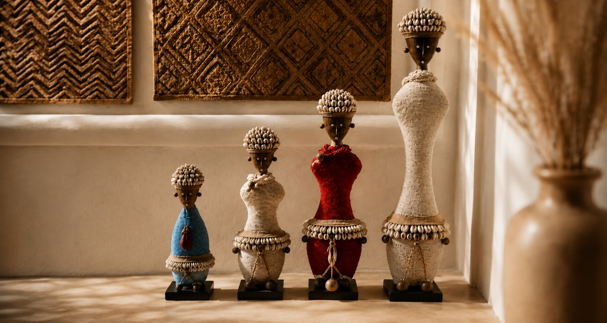
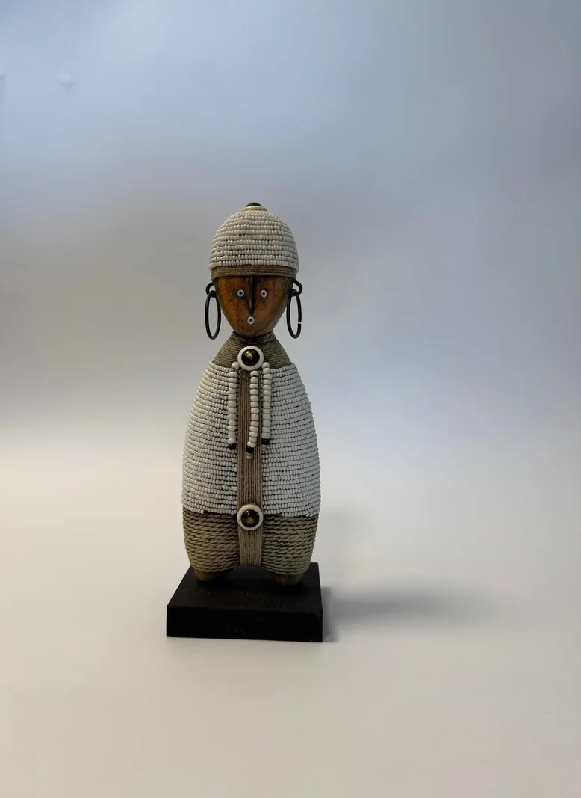
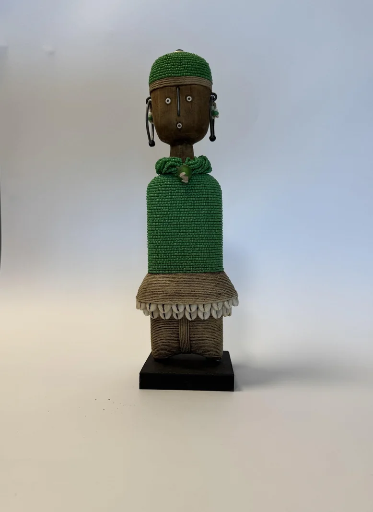
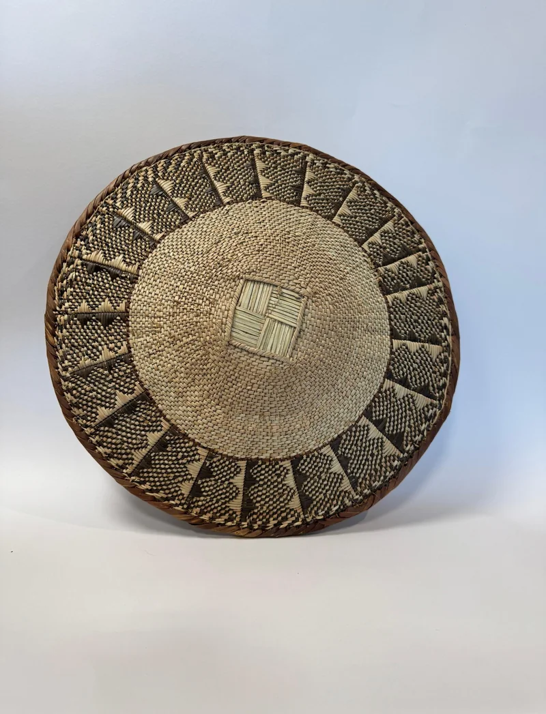
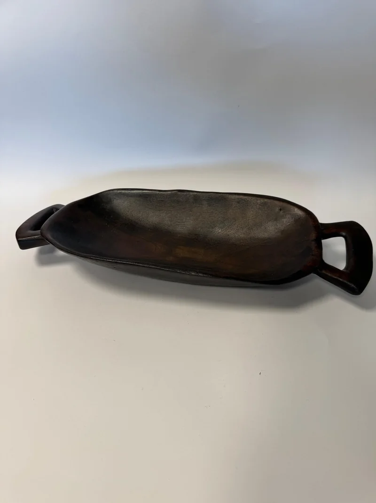
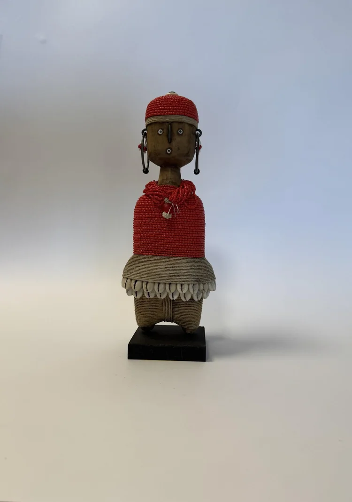
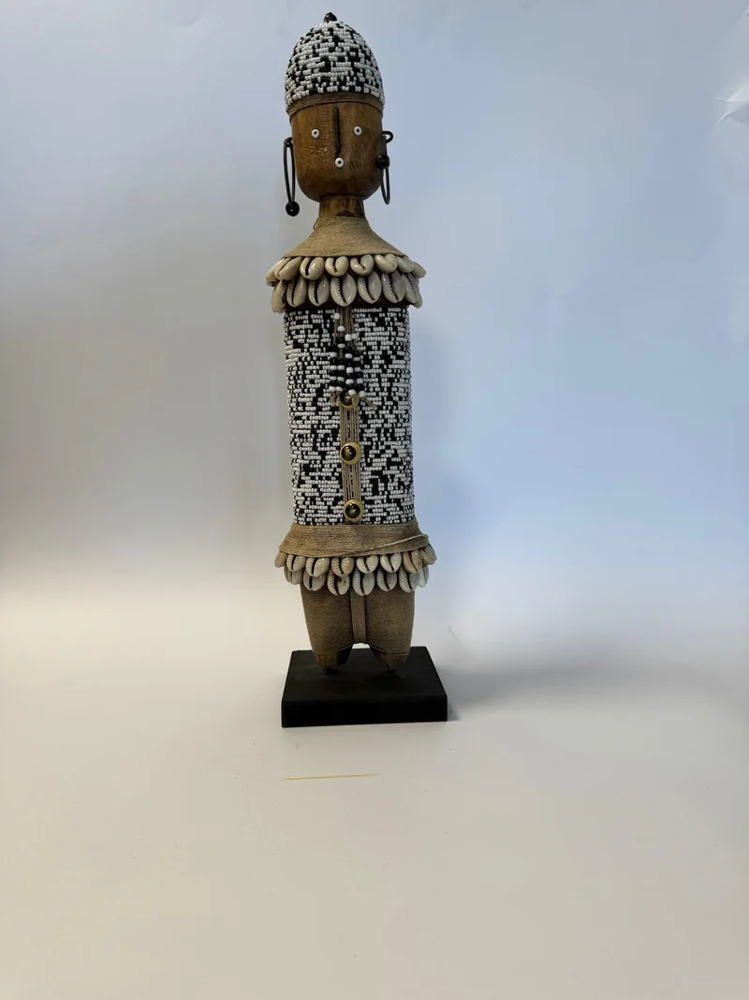
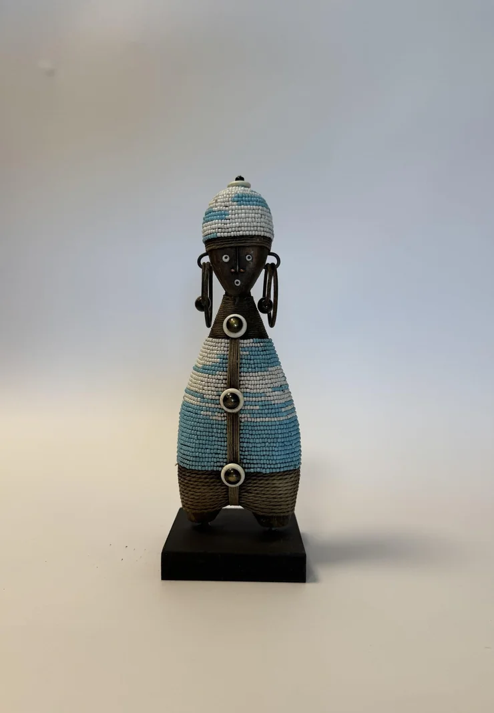

African artisanal home décor
ROOTS
Art. Heritage. Craftsmanship.


Our Story
Rooted in Africa
Born from a deep connection to South Africa, ROOTS celebrates the beauty of the handmade and the meaningful. Each piece connects us to the traditions, skills and stories of the African artisans who create them.
Discover Our StoryNew Arrivals
Recently Added Pieces
Our Curations
A Considered Collection
A considered collection of handcrafted African pieces, chosen for their individuality, artistry and enduring beauty.

Our Curations
Namji Dolls
Handcrafted symbols of beauty, fertility and protection, each Namji doll carries the heritage and artistry of the Namji people of Cameroon.
Explore Namji DollsOur Curations
Tikar Bangles
Intricately handcrafted from thousands of tiny glass beads, Tikar Bangles transform the beadwork traditions of Cameroon's Tikar people into distinctive wearable art.
Explore Tikar Bangles
Our Curations
Round Bowl Baskets
Hand-crafted from natural fibres and locally gathered grasses, these sculptural baskets bring the warmth of African weaving into the contemporary home.
Explore Round Bowl Baskets
Our Curations
Wooden Bowls
Shop nowEditor's Selection
Curated Favourites
The Story Behind Roots
Where We Come From.
What We Carry.
Roots was born from a deep connection to where I come from and what I carry with me. Growing up in South Africa, surrounded by rich traditions, vibrant colours and the artistry of everyday life, I learned to see beauty in the handmade and the meaningful.
Every item in our collection is unique and carries the fingerprint of the artisan who made it. No two pieces are ever exactly the same.
Read our full story
Namji Dolls
Handcrafted Symbols of Heritage
Among the most treasured pieces in our collection are the Namji dolls, handcrafted symbols of beauty, fertility and protection originating from the Namji people of Cameroon. Traditionally adorned with beads, shells and intricate carvings, each doll carries a story of heritage and craftsmanship passed down through generations.
At Roots, our Namji dolls are created entirely by hand, making each piece one of a kind. More than decorative objects, Namji dolls are heirlooms, expressions of tradition and artistry designed to be cherished for years to come.
in this collection
in all sizes
by artisans
The Collector's Home
Objects with Soul Transform a Space
The Collector's Home brings together African craftsmanship and contemporary interiors, showing how sculptural figures, woven forms, beadwork and hand-carved pieces can become meaningful focal points within the home.
Style them individually, arrange them as a considered collection or allow one remarkable piece to command the room.
Explore the Collection

"When the roots are deep,
African Proverb
there is no reason
to fear the wind."
Connect with Roots Gallery
Follow the Collection
For new arrivals, styling ideas and the stories behind each piece, follow us on Instagram or get in touch directly.